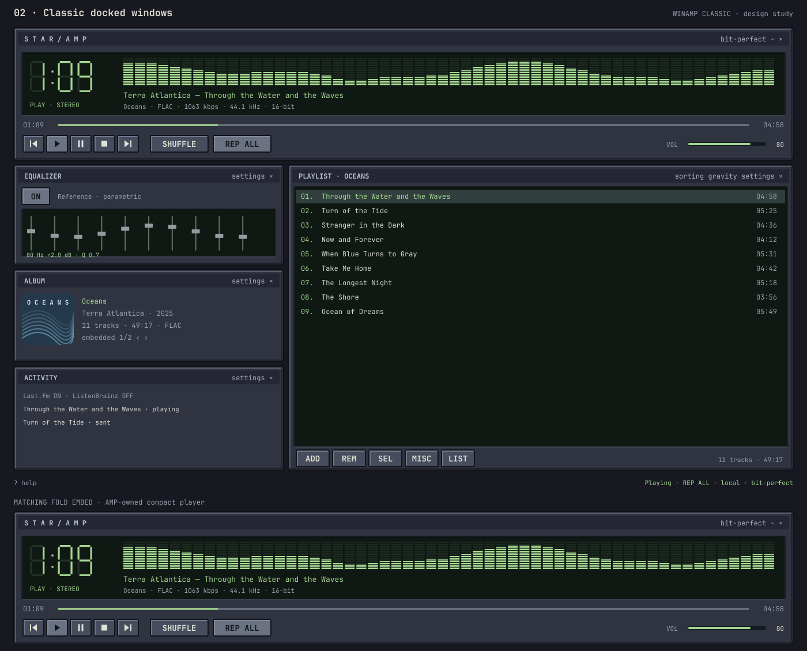
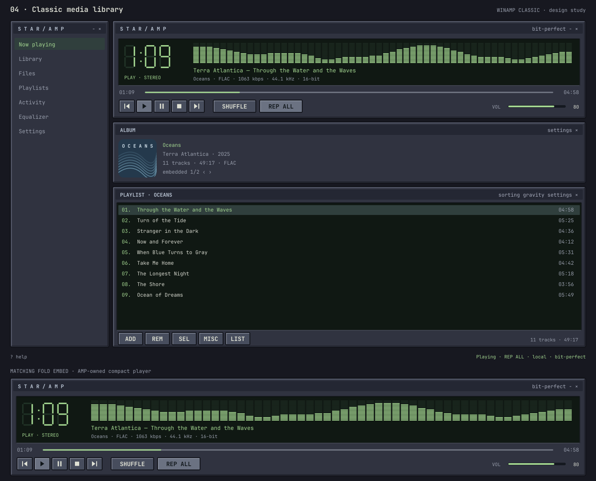
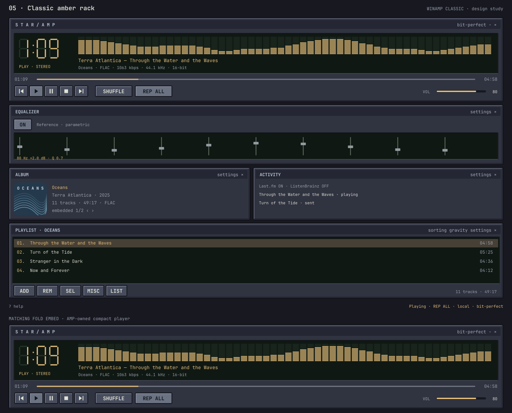
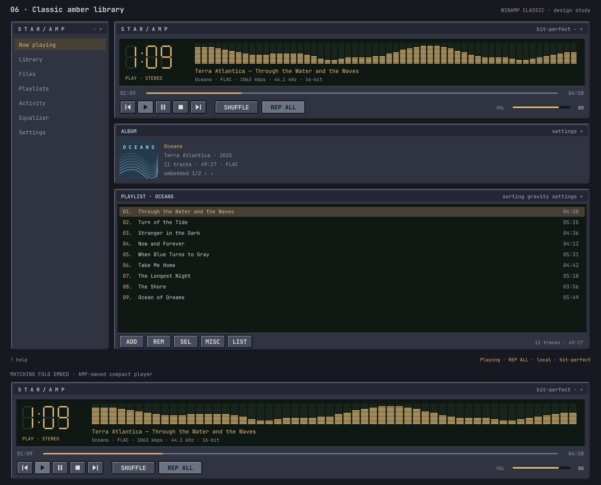
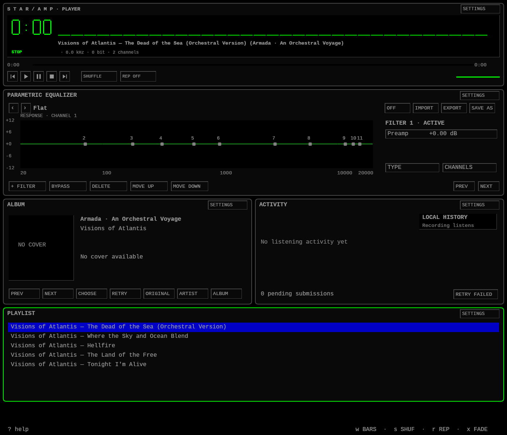
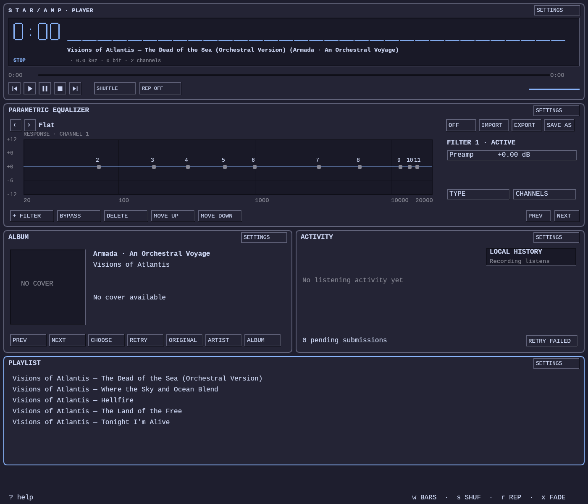
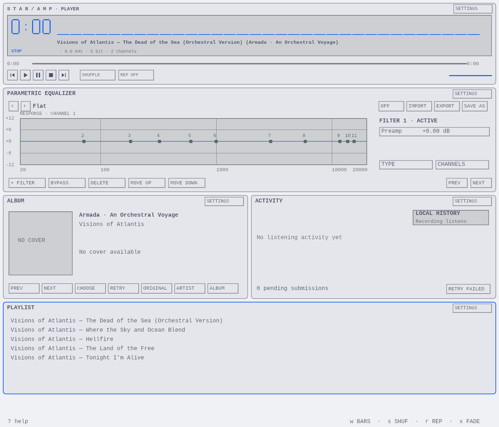

01 — Classic stacked rack · parametric EQ
Selected treatment · square transport · parametric EQ · detailed Album and Activity panels
 Open full-size image ↗
Open full-size image ↗Six revised Winamp Classic treatments: beveled window frames, inset displays, seven-segment clocks, LED analyzers, compact transport controls, dense playlists, and green or amber accents. Each includes a matching FOLD embed. Images are displayed at 1:1 size (1400 pixels wide), one per row. Scroll horizontally when needed. These are visual studies; the full parametric EQ editor and existing features remain required.
Selected treatment · square transport · parametric EQ · detailed Album and Activity panels
Open full-size image ↗Winamp Classic study · green display · subtle corner radius

Open full-size image ↗Winamp Classic study · green display · soft rounded corners
Open full-size image ↗Winamp Classic study · green display · subtle corner radius

Open full-size image ↗Winamp Classic study · amber display · subtle corner radius

Open full-size image ↗Winamp Classic study · amber display · soft rounded corners

Open full-size image ↗Actual compositor captures with isolated fixture data. Full size, theme-derived colors. Empty artwork and history are intentional fixture states.


